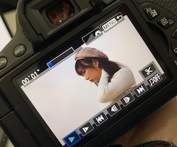

Favorite IDOL
(G)-IDLE 여자 아이들

여자 아이들- LION
아이들을 입덕시켜준 노래이자, 퍼포먼스 및 노래실력과 분위기에 감탄하며 무대영상을 보았다.
2019년 11월 3일에 공개된 곡으로 정확히는 퀸덤 파이널 곡으로 3위를 거머쥐게 한 노래이다.
리더이자 작곡가인 소연은 슈화를 보고 노래를 만들게 되었다는데 멜로디부터 퍼포먼스, 노래, 안무 어느하나 빠지는것이 없는 노래.
Favorite Restaurant
동경산책

일본가정식을 판매하는 샤로수길 맛집
친구가 소개해준 맛집이라 먹어보고 너무 맛있어서 자연스레 다른친구들을 데려가곤 하는 일식집. 실제 촬영한 사진.
특히 스끼야끼랑 롤정식은 무조건 무조건 먹어야하는 메뉴로 두명이 갈경우 1인당1메뉴를 선정해 나누어먹으면 딱 맛있게 먹을 수 있다.
그리고 음료는 꼭 수박소다 혹은 생맥을 시켜서 먹어야한다..쵝오.....
About me
Name: Kim eui jin (김의진)
Birth: 2000.09.18/ Age:21
MBTI: ENFP-T
Popular Post
Contents design
Video design
Favorite
Follow Me
SNS
lovebeast20@naver.com
instagram: @euijin21
instagram: @euijin21